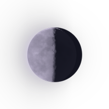

🌗 LAST QUARTER · Letting Go, Healing & Acceptance · BEAUTIFUL DAMAGE · ALTERNATIVE
CORE — BEAUTIFUL DAMAGE
📜 Official Synchronized Lyrics (36 Lines)
▶ 00:00WE WERE REAL, BUT THE DAMAGE WASN'T!
▶ 00:04KEPT YOUR SHIRT, BUT I LEFT THE CLOSET!
▶ 00:07SAY YOUR NAME WITHOUT TURNING BACK
▶ 00:10GOT MY BAGS AND I'M OFF THE TRACK!
▶ 00:14DAMAGE WASN'T... DAMAGE WASN'T!
▶ 00:22NOT COMING BACK! NOT COMING BACK!
▶ 00:29B E A U T I F U L D A M A G E
▶ 00:40CURLED UP PHOTO ON THE WOODEN LEDGE
▶ 00:43COLD COFFEE MUG RIGHT BESIDE THE EDGE
▶ 00:47LEFT THE LIGHT ON, PULLED OUT THE KEY
▶ 00:50WALKED AWAY FROM WHAT USED TO BE
▶ 00:55BLUE PAINTED SHUTTERS ACROSS THE STREET
▶ 00:59NO MORE WAITING FOR OUR HANDS TO MEET!
▶ 01:02WE WERE REAL, BUT THE DAMAGE WASN'T!
▶ 01:06KEPT YOUR SHIRT, BUT I LEFT THE CLOSET!
▶ 01:10SAY YOUR NAME WITHOUT TURNING BACK
▶ 01:13GOT MY BAGS AND I'M OFF THE TRACK!
▶ 01:16DAMAGE WASN'T · NOT COMING BACK!
▶ 01:22SHOPS ARE OPENING DOWN THE BLOCK
▶ 01:25NEVER STOPPING TO CHECK THE CLOCK
▶ 01:28RADIO PLAYING OUR FAVORITE SONG
▶ 01:31I DON'T LOOK BACK, I JUST MOVE ALONG
▶ 01:36NO HERO HERE, NO PERSON SAVED
▶ 01:39LEFT YOUR KEYS BY THE WINDOW FRAME!
▶ 01:42I KEEP THE GOOD TIMES IN MY MIND
▶ 01:46LEAVING THE REST OF THE MESS BEHIND!
▶ 01:49W E W E R E R E A L
▶ 02:04B E A U T I F U L D A M A G E
▶ 02:19WE WERE REAL, BUT THE DAMAGE WASN'T!
▶ 02:23KEPT YOUR SHIRT, BUT I LEFT THE CLOSET!
▶ 02:26SAY YOUR NAME WITHOUT TURNING BACK
▶ 02:30GOT MY BAGS AND I'M OFF THE TRACK!
▶ 02:33I REMEMBER... THE GOOD PART
▶ 02:42WE WERE REAL... BUT THE DAMAGE WASN'T
▶ 02:57I REMEMBER THE GOOD PART · WE WERE REAL
▶ 03:12WE WERE REAL, BUT THE DAMAGE WASN'T!